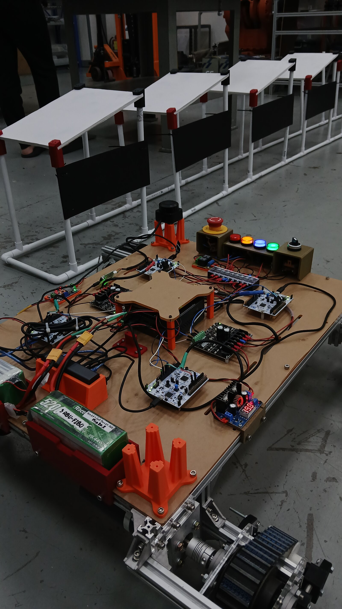

Overview
Two robots for the floating solar farm at Sirindhorn Dam, built for the Electricity Generating Authority of Thailand (EGAT). One is the cleaner, which cleans the solar panels. The other is the transport robot, which carries the cleaner to the different panels.
I worked on the transport robot as a research assistant at the Institute of Field Robotics (FIBO). The job was its movement, docking and autonomous navigation, and the story below is how that work went.
Hardware
| Robot | Transport robot, which carries the cleaning robot between panels |
|---|---|
| Positioning | RTK GNSS |
| IMU | 9-DOF BNO IMU |
| LiDAR | S3 2D LiDAR |
| Controller | Embedded controller running PID wheel-speed control |
System
| Client | Electricity Generating Authority of Thailand (EGAT) |
|---|---|
| Site | Sirindhorn Dam Floating Solar Farm |
| Software | ROS 2, Nav2, micro-ROS |
| Role | Research Assistant |
Process
The transport robot has one job, which is to carry the cleaner from panel to panel. To do that it has to find a panel and stop exactly in front of it. The robot carries RTK GNSS, a 9-DOF BNO IMU and a 2D LiDAR to do this. SLAM with the LiDAR builds the map, RTK GNSS anchors it outdoors, and Nav2 drives. A micro-ROS bridge connects ROS 2 to the embedded controller, which runs PID control of the wheel speeds.
I built the test kit first, the one in the photo below, and ran the autonomous driving on it indoors while the full-size robot was still being built.
When the full-size robot was finished, I tested it outdoors at FIBO, where it drove fully autonomously.
At the site, the robot was driven by a joystick, one move and stop at a time. The large robot was too big for the site, and a mechanical problem kept it from driving there.
Figures and Video
